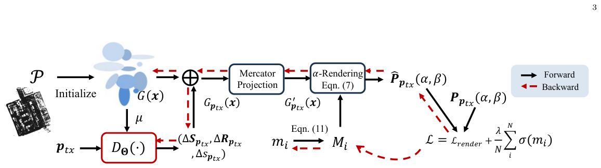

Eff-WRFGS: Efficient Wireless Radiance Field Using 3D Gaussian Splatting
给 WRF-GS 的每个 3D Gaussian 配一个 STE-可学 mask 做剪枝 + 点云初始化，存储 44× 压缩、推理 7× 加速、SSIM 几乎不掉。
关键贡献
- 给 WRF-GS 加 STE 可学 mask + 正则项，单参数 λ 就在「质量-效率」帕累托上滑
- 44× 存储压缩、7× 推理加速，SSIM 只掉 0.03——把 WRF 推近实时 CSI 推断
- 点云初始化把 Gaussian 中心和真实几何对齐（Chamfer 0.22 vs 7.51）
解读
背景与问题：未来 6G/ISAC 想用「无线辐射场」(Wireless Radiance Field, WRF) 在线推断任意收发位置的 CSI，从而省下 pilot/feedback 开销。最近的 NeRF² (MobiCom'23) 和 WRF-GS (TWC'26) 已经把 NeRF / 3D Gaussian Splatting 思路成功带入 RF 信道建模，但存储/推理太重——单场景轻松上 6 万个 Gaussian 原语，渲染延迟 0.2-7 秒，离实时还差好几个数量级。
现有方案的不足：(1) U-Net 风格 radio map 在散射体复杂时崩；(2) 可微 ray-tracing 假设几何/材质已知、运行慢（7 秒/帧）；(3) NeRF² 沿每条射线密采样 + 多层 MLP 调用，重又慢；(4) WRF-GS 用 3D Gaussian 做 rasterization 已经把 NeRF² 加速到 0.2 秒，但 Gaussian 原语冗余度极高，CV 里 LightGaussian 之类的剪枝技术能不能搬到 RF 是空白。
核心方法（Eff-WRFGS）：作者把 WRF-GS pipeline 拆成三个改进：
1. 可学习重要性 mask：给每个 Gaussian G_i 加一个标量 m_i，σ(m_i) 作为重要性。渲染时按阈值 ε 二值化 M_i = 𝟙[σ(m_i) > ε]，跳过 M_i=0 的原语；二值化通过 Straight-Through Estimator M_i = sg(𝟙[σ(m_i)>ε] − σ(m_i)) + σ(m_i) 让梯度仍可回传。
2. 正则化损失：L_m = (1/N) Σ σ(m_i)，鼓励整体保留比例下降；总损失 L = L_render + λL_m 中 λ 直接控制「质量-效率」帕累托。
3. 点云初始化：用场景 3D 点云的点位 x_i 初始化 Gaussian 中心 μ_i，方差按最近邻距离设置，比随机初始化的 Chamfer 距离 0.22 vs 7.51——大幅改善与真实几何对齐。
4. 三阶段训练：densification（建模能力）→ pruning（按 mask 周期性剪掉无用 Gaussian）→ fine-tuning（停剪，纯优化渲染质量）。

实验设置：NeRF² 数据集，4898 训练 / 1225 测试样本，每条样本含一个空间频谱图 (360×90 像素) 和发射机位置 p_tx。共 2×10⁵ iteration（densification 2×10⁴ + pruning 2×10⁴ + finetune 1.6×10⁵）。指标 SSIM 衡量频谱重建质量，单条预测延迟在 RTX 1080 上测。对比 NeRF²、ray-tracing、WRF-GS (λ=0)。
关键结果：
- λ=0.02 时 Gaussian 数从 61466 → 1374（44× 压缩），SSIM 仅掉 0.03；
- 延迟从 0.22s 降到 0.031s（7× 加速），比 NeRF² 快 6.5×、比 ray-tracing 快 200+×；
- 点云初始化的 Pareto 前沿全面优于随机初始化；
- 极端 λ=0.04 只剩 24 个 Gaussian 时 SSIM 掉到 0.66，频谱重建明显糊掉——给出可用上界。
局限与可推广性：(1) 只跑了 NeRF² 数据集，未在 RF-3DGS 等其他 WRF benchmark 验证泛化；(2) 论文承认延迟在 N=1374 之后达到 floor（受 deformation MLP 主导），更激进的压缩需要把 deformation 也轻量化；(3) 论文未讨论室外/动态场景下点云初始化的可行性（需提前扫描）。
原始摘要
Wireless channel modeling is a key building block for next-generation wireless systems. Predicting the channel state information (CSI) across different transmitter locations can substantially reduce the pilot and feedback overhead of conventional channel estimation. We propose Eff-WRFGS, an efficient wireless radiance field modeling framework built upon 3D Gaussian Splatting.